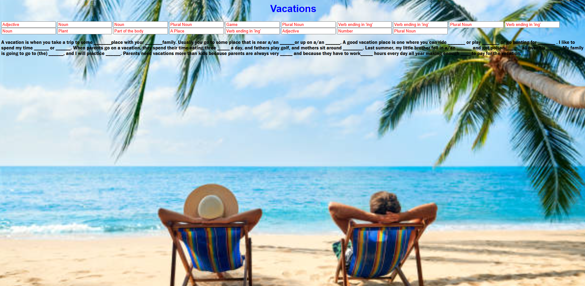

Skills:


Projects:


Education:
 B.S. Biology May, 2000
B.S. Biology May, 2000
- Undergraduate research in phytoremediation. Worked with graduate student on aquatic macroinvertebrate ecology research.
- One year of graduate work emphasis aquatic ecology. (2000-2001)
- Some classes in computer information technology. (2006)
Coding with AI graduate 2025
- HTML, CSS, JavaScript
- GitHub, Bootstrap, J6, React, Node
- MERN, Node Package Module, KMeans
Experience:
Satellite Installation Technician
- Installed, troubleshoot and repaired satellite equipment.
- Installed, televisions, sound systems and a variety of smart home products.
- Customer Service.
Operator
- Operated Class A & B Mack trucks and industrial cleaning equipment.
- Supervised cleaning teams.
- Worked in a team environment.
Forestry Technician
- Worked independently and as apart of a team. Often in high intesity situations.
- National Wildfire Coordinating Group Qualifications: Incident Commander Type 4, Security Mangager, Faller type 2, Engine Boss.
- Obtained and maintained a variety of qualifications: Pesiticide Applicators License, Contracting Officers Representative, Forest Protection Officer, ArcGis, Licensed ATV Safety Institute Trainer, NASAR accredited Search and Rescue SARTECH II, Emergency Medical Responder.
Forestry Technician
- Worked independently and as apart of a team. Often in high intesity situations.
- Performed Forestry work including: timber marking, timber cruisind, plots,fuels analysis.
Forest Ranger Technician III
- Worked independently and as apart of a team. Often in high intesity situations.
- Supervised volunteer fire departments on wildfires.
- Supervised wildfire bulldozer operators and state crew.
Security Guard
- Security and First Responder at GM Corvette Plant Bowling Greenk Kentucky.
- Public relations, safety, and security.
- Second job coinciding with Air Inspector job and a year prior.
Inspector I
- Ran and maintained air monitoring equipment at 3 sites.
- Inspected industrial stacks and emissions at power plants, rock quarries, emmissions controls.
Student Work experience
- Night Clerk (Fall 1997 til Spring 2000).
- University Library student worker (summmers of 1998, 1999).
- Graduate Student Assistant aquatic ecology surveys (Fall 1999 til Spring 2000).
Mess Specialist Third Class
- A Master-at-Arms - leadership not only by rank, but by presence, expertise, and principle. Whether supervising watch teams, conducting investigations, or protecting personnel and assets, MAs demonstrate leadership through trustworthiness, adaptability, and calm decisiveness in high-stakes environments. Onboard a Aircraft Carrier.
- Mess Specialist Third Class - Practical everyday leadership of critical mission success of crew morale, and well-being. Supervision, coordination, accountability, and morale-building on board a Submarine.
- Underwater Warfare Qualification - a specialized military certification that signifies a service member’s proficiency in detecting, analyzing, and countering underwater threats. This qualification is typically associated with naval forces, particularly within submarines.